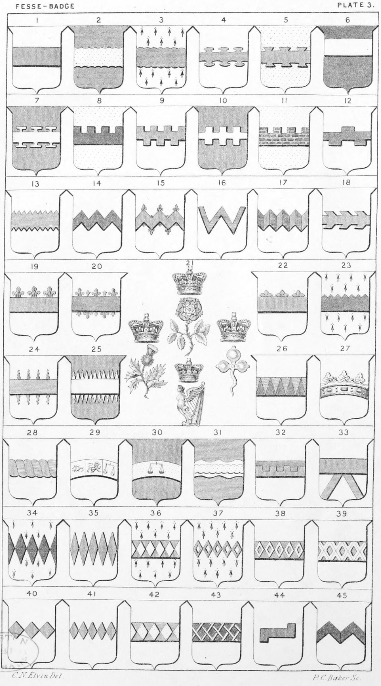

Plate 3.

Plate 3.
- Fess or Fesse, Ar. a Fesse gu.
- Fesse Engrailed
- Fesse Invecked, or Invected
- Fesse Nebulee, or Nebuly
- Fesse Dovetail
- Fesse Enhanced
- Fesse Potentee, or Counter Potent
- Fesse Crenelle, or Embattled
- Fesse Embattled, counter-embattled
- Fesse Bretessed
- Fesse Embattled-masoned
- Fesse with one embattle on the top, counter-embattled with two in the bottom
- Fesse Indented
- Fesse Dancettee
- Fesse Dancette-fleurycounter-fleury. A fess dancette the upper points terminating in fleur-de-lis is borne by the name of Flowden
- Fesse Dancette of two pieces, or Fesse Emaunchee
- Fesse Dancettee gobony
- Fesse Raguly, counter-raguly
- Fesse Flory or Fleury
- Fesse Flory, counter-flory
- See Badge in Dictionary
- Fesse Treflee
- Fesse Indented on the top, or Feuille de scie
- Fesse Flamant on the sides
- Fesse Radiant, or Rayonne
- Fesse Indented point in point
- Fesse Coronated on the top
- Fesse Wreathed, Tortilly, or Tortile
- Fesse Hemisphere, or Zodiac
- Fesse Arched, Champourne, or Eliptic-circle, thereon the sign libra
- On a Fesse waved, or wavy, another Invecked
- A Fesse per-fesse Crenelle
- Fesse Supported with two Stays cheveronwise
- Fesse of three fusils, or three fusils conjoined in fesse
- Fesse of Five fusils, or Five fusils conjoined in fesse
- Fesse Fusily
- Fesse of Five mascles, or Five mascles conjoined in fesse
- On a Fesse, Five mascles conjoined ; properly a fesse vert, masculy ar.
- Fesse masculee
- Fesse of three lozenges, or three lozenges conjoined in fesse
- Fesse of Five lozenges, or Five lozenges conjoined in fesse
- Fesse lozengy or and az.
- Fesse sa. Fretty of the field
- Fesse Rectangled at both ends couped, the dexter to the base
- Fesse of Two chevrons conjoined, or Two chevrons coupled